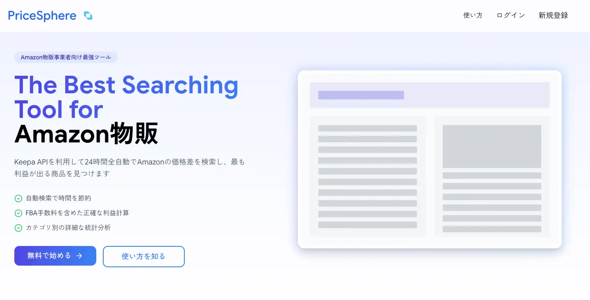
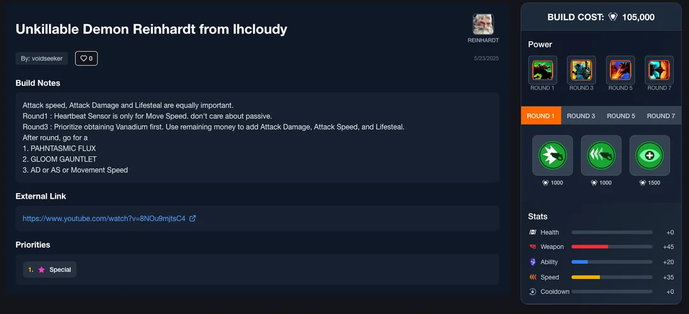
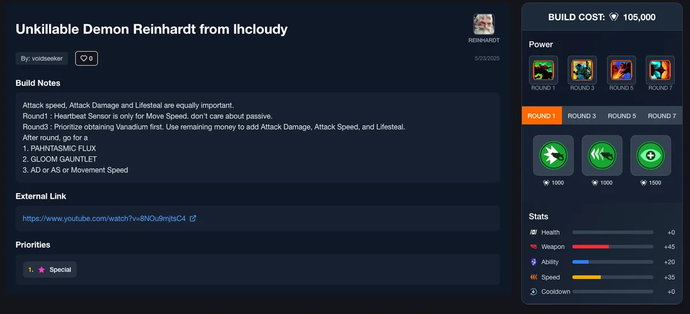

学歴
職歴
2019年4月〜2020年3月
株式会社ラクスパートナーズ
エンジニアとして従事。主にPython、クラウド周りの業務を担当。
2020年4月〜2025年3月
個人事業主
Python、PHP、AWS、Azureをはじめとするクラウドを利用したサービス開発。
2025年4月〜現在
合同会社サムライトレード 代表取締役
ソフトウェア開発、物販を行う会社の代表
会社で開発したプロジェクトは下記の「開発したプロジェクト」を参考
会社で開発したプロジェクトは下記の「開発したプロジェクト」を参考
従事したプロジェクト
主にクラウドアーキテクチャの構築とPython, JavaScript, PHPでの機能追加を行っています。
自然言語処理モデルの開発
2019年4月〜2020年3月
広告キャッチコピーの分析、婚活プラットフォームのメッセージの分析を担当。機械学習モデルでそれらのデータを分析し、ユーザーの属性や文章から結果につながる内容の解析を行いました。
Python
MySQL
Ubuntu
Pandas
GCE
航空系Webサービスの大規模データ処理(ETL)開発
2020年4月〜2020年9月
航空系データの機能開発、保守業務、インフラのKubernetes移行。クラウド(Azure)を用いたデータ処理の一連パイプライン構築スキル。各種ストレージ、DBを利用したシステムを構築しました。
Python
Azure
Kubernetes
Python, FastAPIを用いたAPIサーバー開発
2020年12月〜2021年9月
サーバーレスプラットフォーム上でマイクロサービス的な開発手法をSwaggerで記述されたドキュメントに従いながら開発。S3やAuroraなどのクラウドサービスとの連携機能の開発を主に担当。
Python
SQL
FastAPI
Swagger
AWS
Strapiで開発されたHeadless CMSサーバーの保守運用
2021年10月〜2022年9月
Strapi、Node.js、PHPでの基本的な開発スキル、API Testerを利用したテストと保守運用を行っていました。
JavaScript
EC2
MySQL
Node.js
画像処理パイプラインの保守改修
2022年10月〜2025年3月
Jenkinsで構築された画像処理パイプラインの機能追加、保守改修を行っていました。サーバー全体の管理を担当して、クラウド周りの修正や更新、セキュリティ面の強化、PythonとGroovyで機能の追加を担当。
Jenkins
Groovy
Python
AWS
EC2
Kubernetes
CloudFormation
Ubuntu
SQLite
開発したプロジェクト
個人開発、もしくは私が代表の会社で開発していたプロジェクト一覧


PriceSphere
2025年
アマゾンマーケットプレイス間の商品を比較し、価格差の大きい商品を抽出するサービス
PHP
Laravel
EC2
LoadBalancer
CloudFormation
Supabase
PostgreSQL
Clerk
 

Overbuilder
2025年
Overwatch2のスタジアムモードのビルド投稿サイト
Next.js
AWS Amplify
Supabase
PostgreSQL
Clerk
非公開のメディア
2025年
非公表
特定の人物に関する情報を複数のサイトからスクレイピング
その情報がどの人物に関する言及なのかをAIで抽出 人物の読みもAIで取得
それぞれのサイトの情報をフォーマットを整えサービス上に表示。
ECSでそれらの処理を1日1回実行。
人物 : 3万人以上
投稿数 : 800万件以上
特定の人物に関する情報を複数のサイトからスクレイピング
その情報がどの人物に関する言及なのかをAIで抽出 人物の読みもAIで取得
それぞれのサイトの情報をフォーマットを整えサービス上に表示。
ECSでそれらの処理を1日1回実行。
人物 : 3万人以上
投稿数 : 800万件以上
Next.js
supabase
CloudFormation
ECS
python